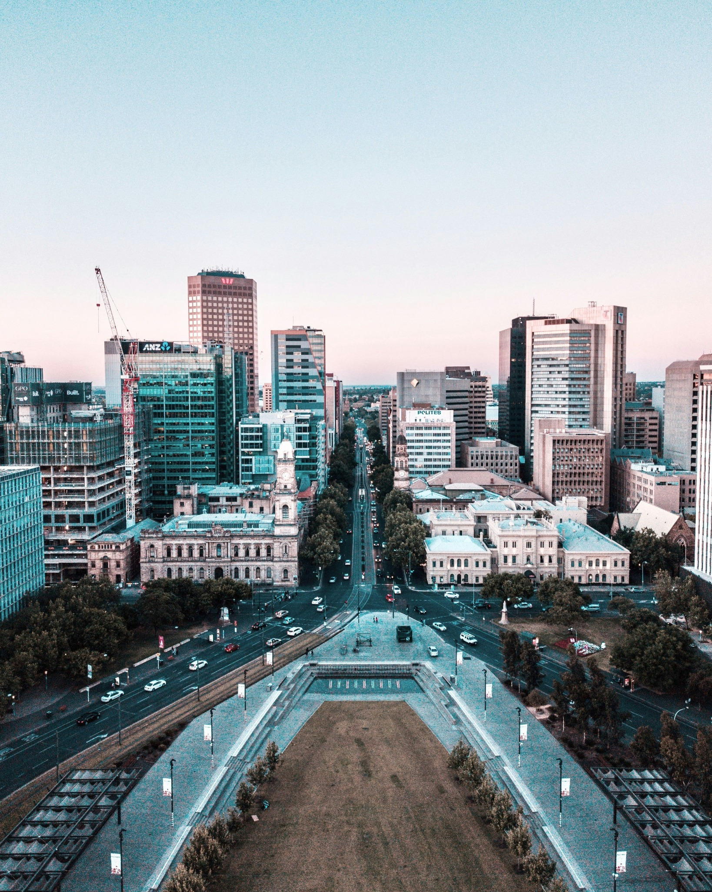
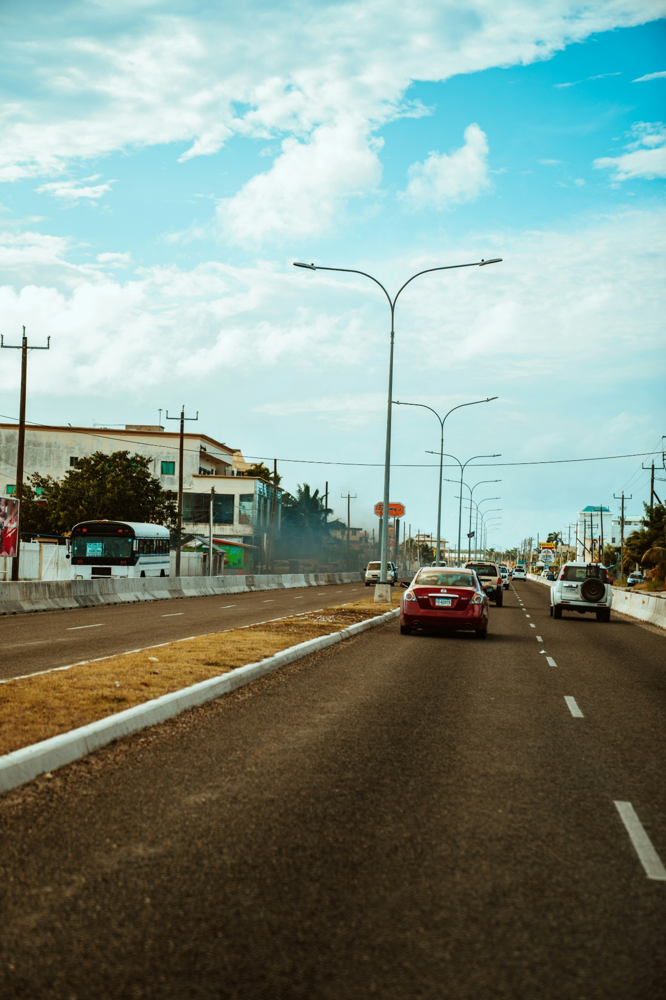
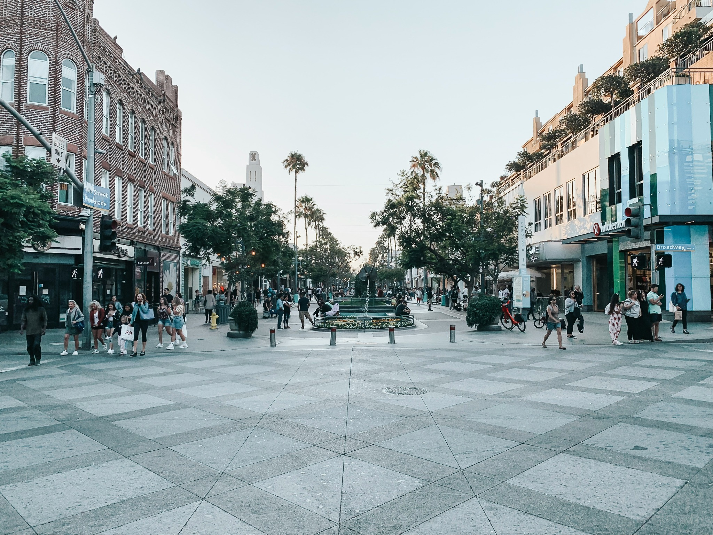
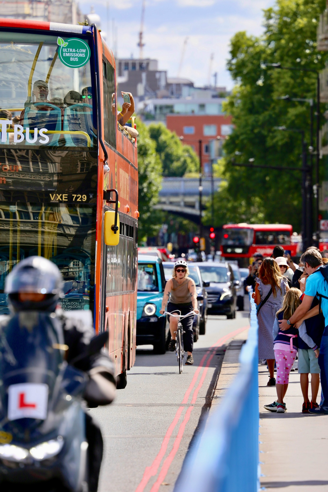
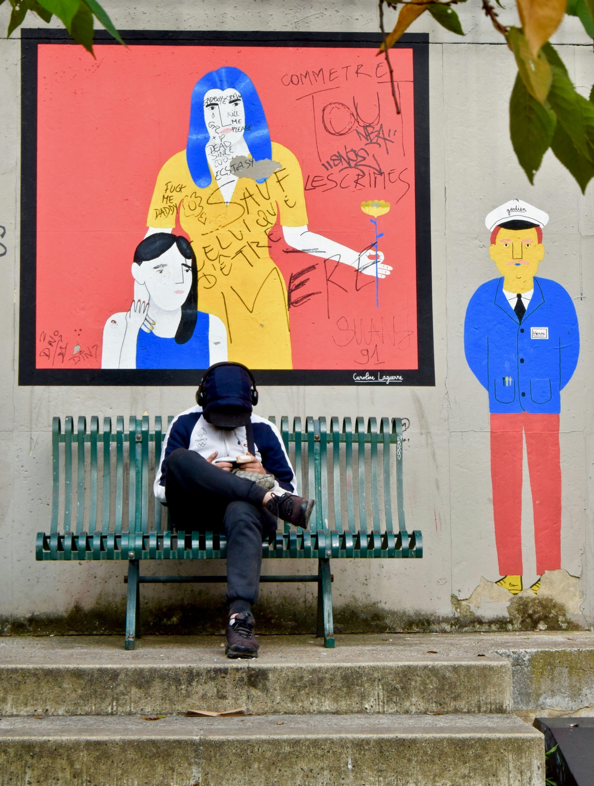
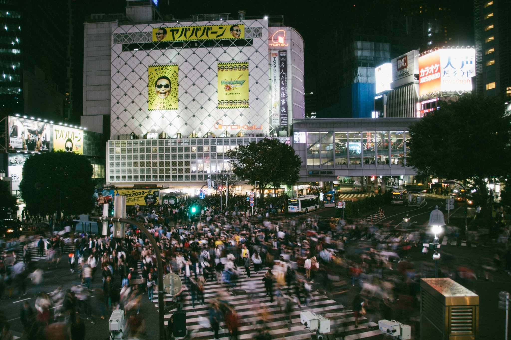
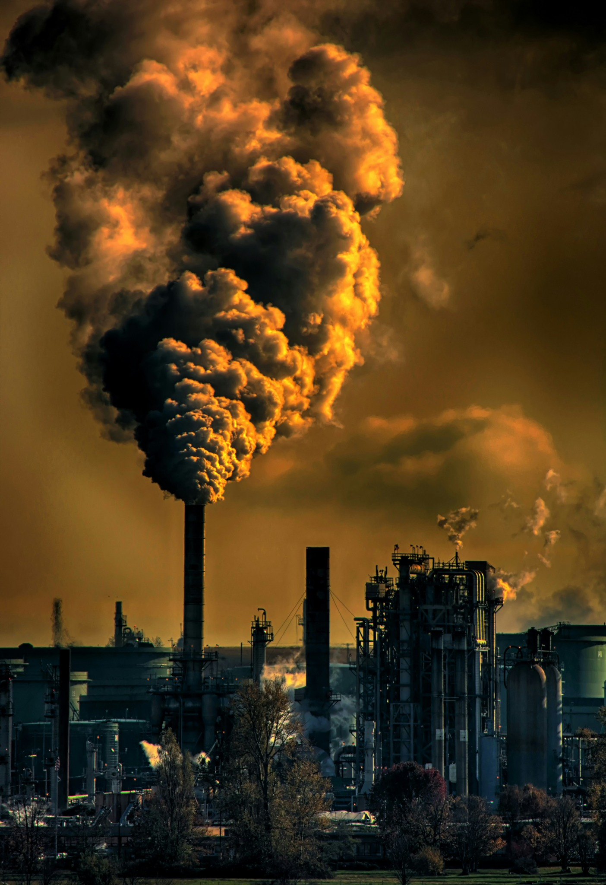

The Space We Take
What if the emissions we make occupied the spaces we share?
A square appears open and ordinary. People cross it on their way to work, shops and home. This visual essay imagines a future artwork that makes the carbon dioxide associated with everyday transport visible within that familiar space.

Behind the Everyday
Burning fossil fuels releases carbon dioxide, a greenhouse gas that contributes to global warming. Yet a journey ends without leaving an obvious record in the street. The activity is familiar; its contribution to atmospheric change is harder to perceive.

Making the invisible present
A translucent amber volume hovers in the square. As time passes, transport emissions data drives its gradual expansion. Across hours, days and weeks, the cumulative total grows, and the form occupies more of the familiar view. Returning visitors encounter a space visibly changed since their last visit.
Its size follows a disclosed artistic scale. It represents emissions, not a cloud physically trapped above the street. The installation translates environmental information into an experience people can explore together.

One atmosphere, different choices
The projection occupies a shared view, but responsibility and opportunity are uneven. A commuter’s choices depend partly on available transport, housing and employment. Infrastructure, alongside individual behaviour, is important to reducing emissions.
Visitors can contribute observations about their journeys and the alternatives available to them. These accounts connect the growing volume with the systems shaping everyday decisions.

Does seeing change anything?
Some visitors stop, notice its growth and discuss what they see. Others pass by. A striking image might encourage conversation, but attention does not guarantee action. Could the expanding form eventually become just another unnoticed part of the city?
The installation could become a meeting point for residents, planners and transport providers. Its value would depend on whether shared experience supports participation beyond the spectacle. Its own energy use also complicates its environmental message.



The square isn’t empty.
When the exhibition ends and the projection switches off, the familiar view returns. Its disappearance has removed a representation, not reversed the emissions it represented.
The artwork leaves a question: once we have seen the space our activities take, what are we prepared—and able—to change together?